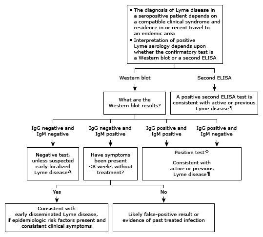

Initial evaluation of positive Lyme antibody in adults*

This algorithm is intended for use with additional UpToDate content on Lyme disease.
ELISA: enzyme-linked immunosorbent assay; IgG: immunoglobulin G; IgM: immunoglobulin M; IFA: immunofluorescent assay. * Serologic testing for Lyme disease requires 2 tests: ELISA (or IFA) followed by a Western blot IgG and IgM test or a modified approach (2 enzyme immunoassays, which are reported together as either positive or negative). ¶ The need for therapy is dependent on the previous history and current clinical signs and symptoms. Δ IgM antibodies usually appear within 1 to 2 weeks, and IgG antibodies usually appear within 2 to 6 weeks following onset of erythema migrans. Thus, particularly during the first week, patients with a characteristic erythema migrans lesion will likely be seronegative. ◊ Antibodies (both IgG and IgM) may persist for years after successful treatment. Most patients with early disseminated Lyme disease (eg, early neuroborreliosis or Lyme carditis) are seropositive. Patients with late Lyme disease (eg, arthritis) are almost invariably IgG positive.